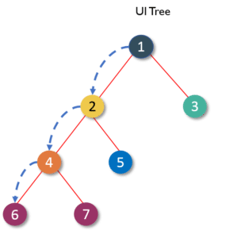

Keyboard shortcuts:
N/СпейсNext Slide
PPrevious Slide
OSlides Overview
ctrl+left clickZoom Element
If you want print version => add '
?print-pdf' at the end of slides URL (remove '#' fragment) and then print.
Like: https://wwwcourses.github.io/...CourseIntro.html?print-pdf
React Props and State
Created for
Created by
Props
Props
Overview
- When React sees a user-defined component, it passes all JSX attributes, and element's children, to this component as a single object (by convention we name it "props").
- Props are way of passing data from parent to child component
Accessing "props" from function component
- "props" are passed as object from parent component (PropsDemo) to child component
// props in function component
function GreetUser(props) {
console.dir(props);
return <div> Hello, {props.userName}</div>
}
function PropsDemo() {
return <GreetUser userName="Ada" id="test"/>
}
export {PropsDemo}
Accessing some "props" from function component - object destructuring
- If we don't need all of the props, but just some of them, we can use ES6 Object Destructuring syntax
function GreetUser({userName}) {
return <div> Hello, {userName}</div>
}
function PropsDemo() {
return <GreetUser userName="Ada" id="test"/>
}
export {PropsDemo}
Accessing "props" from class component
import React from "react";
// props in class component
class GreetUser extends React.Component{
render(){
console.dir(this.props);
return <div> Hello, {this.props.userName}</div>
}
}
function PropsDemo() {
return <GreetUser userName="Ada" id="test"/>
}
export {PropsDemo}
Accessing "props" from class component
- If you will use a constructor in your class, you should call super(props) before any other statement
import React from "react";
// props in class component
class GreetUser extends React.Component{
constructor(props){
super(props)
//...
}
render(){
console.dir(this.props);
return <div> Hello, {this.props.userName}</div>
}
}
function PropsDemo() {
return <GreetUser userName="Ada" id="test"/>
}
export {PropsDemo}
One-way data binding
- React follows the rule that properties have to flow down from a parent component to an immediate child component.
- React implements only one-way data binding!
Props propagation
{kind=link}
If we want to send props from component 1 to component 6, every child component in this path has to receive the property from its parent and then resend that property to its child
Props immutability
- Props should be immutable object, since they are passed from parent to child! I.e. the children must not chnage the props object!
Components State
Components State
Overview
- So far we see, that Components can receive props from their parents and can only render them, without changing the data.
- Such Components are called Stateless Components, and usually we implement them with Funciton Component.
- But in order to implement a business logic in our App, a Componnent will need to store data which can change over time.
- I.e. we need a Stateful Components
- Stateful components can store data in an object, called state and the change of that data (the state) will determines how the component will behave and render.
Stateful components
A stateful component can be created by:
- Class component, where the state is an instance property, accessible by
this.state - Function component (from React v16, using the
useStatehook)
Stateful Class Component Demo
class TodoList extends React.Component{
constructor(props){
super(props);
this.state = {
'todos' : [
{'title': 'Todo 1', 'completed': false},
{'title': 'Todo 2', 'completed': true},
]
};
}
render(){
return (
<ul>
{this.state.todos.map( todo =>
<Todo title={todo.title} completed={todo.completed}/>
)}
</ul>
)
}
}
Stateful component diagram

Changing state
- We do not manipulate directly the state object, but rather - using the
setState() method - When
setState()is triggered, React creates a new VDOM tree containing the reactive elements in the component (along with the updated state) - This new tree is used to figure out how the component’s UI should change in response to the state change by comparing it with the elements of the previous tree.
- React knows which changes to implement and will only update the parts of the DOM where necessary.
- Reference: setState() @react docs
Changing state demo
export class Counter extends React.Component{
constructor(props){
super(props);
this.state = {
'count': 0
}
this.increment = ()=>{this.setState({
'count': this.state.count+1
})}
this.decrement = ()=>{this.setState({
'count': this.state.count-1
})}
}
render(){
return (
<div className="counterDemo">
<button onClick={this.increment}>Increment</button>
<button onClick={this.decrement}>Decrement</button>
<div className="output">{this.state.count}</div>
</div>
)
}
}
State vs Props
- props and state are both plain JavaScript objects, but their usage is conceptually different
- state is component data managed from within a component, props are component data that are managed from above and passed in.
- Props should not be changed in the component - only the parent who passed them can change them
- State can be changed inside a component
- Often, state data are passed to child components through the props.
State vs Props
| Conditions | State | Props |
|---|---|---|
| Parent component can change values | No | Yes |
| Component itself can change values | Yes | No |
Lifting State Up
Lifting State Up
- Reading: Lifting State Up @react docs
References
References
Docs
These slides are based on
customised version of
framework